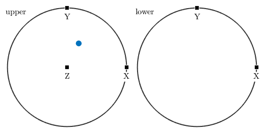

Explains how to define and calculate with specimen directions.
| On this page ... |
| Defining Specimen Directions |
| Calculating with Specimen Directions |
| Plotting three dimensional vectors |
Specimen directions are three dimensional vectors in the Euclidean space represented by coordinates with respect to an external specimen coordinate system x, y, z. Im MTEX, specimen directions are represented by variables of the class vector3d.
The standard way to define specimen directions is by its coordinates.
v = vector3d(1,1,0);
This gives a single vector with coordinates (1,1,0) with respect to the x, y , z coordinate system. A second way to define specimen directions is by its spherical coordinates, i.e. by its polar angle and its azimuth angle. This is done by the option polar.
polar_angle = 60*degree;
azimuth_angle = 45*degree;
v = vector3d('polar',polar_angle,azimuth_angle);Finally one can also define a vector as a linear combination of the predefined vectors xvector, yvector, and zvector
v = xvector + 2*yvector;
As we have seen in the last example, one can calculate with specimen directions as with ordinary numbers. Moreover, all basic vector operations as "+", "-", "*", inner product, cross product are implemented in MTEX.
u = dot(v,xvector) * yvector + 2 * cross(v,zvector);
Using the brackets v = [v1,v2] two specimen directions can be concatenated. Now each single vector is accessible via v(1) and v(2).
w = [v,u]; w(1) w(2)
ans = vector3d size: 1 x 1 x y z 1 2 0 ans = vector3d size: 1 x 1 x y z 4 -1 0
When calculating with concatenated specimen directions all operations are performed componentwise for each specimen direction.
w = w + v;
Beside the standard linear algebra operations there are also the following functions available in MTEX.
angle(v1,v2) % angle between two specimen directions dot(v1,v2) % inner product cross(v1,v2) % cross product norm(v) % length of the specimen directions sum(v) % sum over all specimen directions in v mean(v) % mean over all specimen directions in v polar(v) % conversion to spherical coordinates
A simple example to apply the norm function is to normalize a set of specimen directions
w = w ./ norm(w)
w = vector3d
size: 1 x 2
x y z
0.447214 0.894427 0
0.980581 0.196116 0
The plot function allows you to visualize an arbitrary number of specimen directions in a spherical projection
plot([zvector,vector3d(1,1,1),yvector-zvector],'labeled')
| DocHelp 0.1 beta |